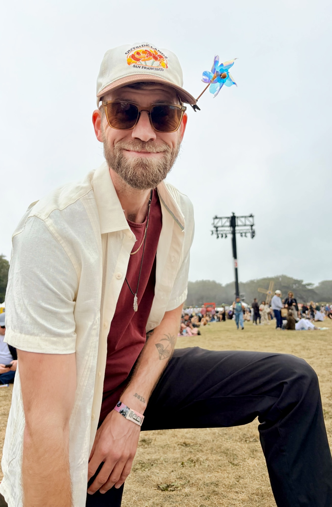

Blender · Motion
Product Reveal
A short animation built around pacing and the moment the light reveals the product.
Creative technologist
I build things I’m curious about.
Sometimes it’s a Blender animation, sometimes it’s a website, and sometimes it’s a coffee recipe. I like diving into new skills until things start making sense.

Blender experiments in motion, lighting, and form.
Blender · Simulation
An experiment in making simulated liquid feel natural on screen.
Read case studyBlender · Product animation
A headphone model I built and lit for a seamless turntable loop.
Read case studyBlender · Motion
A short animation built around pacing and the moment the light reveals the product.

DJing · Duh.Kota
A late-night Instagram ad for YourShot sent me to six weeks of DJ classes in Los Angeles. I’d never played to a crowd before. By the end, I was onstage at Catch One with my classmates, hands shaking and trying to stay in the moment.